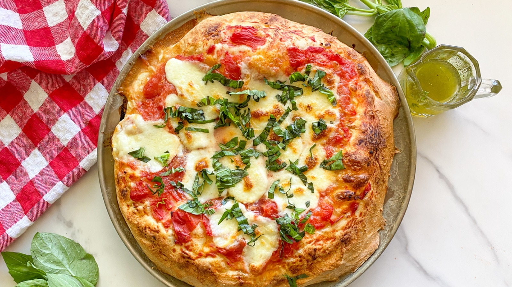

Homemade Margherita Pizza

Pizza margherita, as the Italians call it, is a simple pizza hailing from Naples. When done right, margherita pizza features a bubbly crust, crushed San Marzano tomato sauce, fresh mozzarella and basil, a drizzle of olive oil, and a sprinkle of salt. That is all.
Ingredients
For the Dough:
- 2 1/4 teaspoons (1 packet) active dry yeast
- 1 1/2 cups warm water (110°F/45°C)
- 3 1/2 to 4 cups all-purpose flour
- 2 tablespoons olive oil
- 2 teaspoons salt
- 1 teaspoon sugar
For the Topping:
- 1 cup tomato sauce (preferably San Marzano tomatoes, crushed)
- 1 1/2 cups fresh mozzarella cheese, sliced
- 1/4 cup grated Parmesan cheese
- Fresh basil leaves
- 2 tablespoons olive oil
- Salt, to taste
Instructions
- In a small bowl, dissolve the active dry yeast and sugar in warm water. Let it sit for about 5-10 minutes until it becomes frothy.
- In a large mixing bowl, combine 3 1/2 cups of flour and salt. Make a well in the center and add the yeast mixture and olive oil. Stir until a dough forms.
- Turn the dough out onto a floured surface and knead for about 8-10 minutes, adding more flour as needed, until the dough is smooth and elastic.
- Place the dough in a lightly oiled bowl, cover with a damp cloth, and let it rise in a warm place for about 1-2 hours, or until it has doubled in size.
- Preheat your oven to 475°F (245°C). If using a pizza stone, place it in the oven while it preheats.
- Punch down the risen dough and divide it into two equal pieces (for two pizzas). On a floured surface, shape each piece into a ball and let it rest for 10 minutes.
- Roll out each dough ball into a 12-inch round. Transfer the dough to a piece of parchment paper for easy handling.
- Spread a thin layer of tomato sauce over the dough, leaving a small border for the crust.
- Arrange the fresh mozzarella slices evenly over the sauce. Sprinkle with grated Parmesan cheese.
- Drizzle with olive oil and season with a pinch of salt.
- Carefully transfer the pizza (with parchment paper) onto the preheated pizza stone or a baking sheet.
- Bake for 10-12 minutes, or until the crust is golden and the cheese is bubbly and slightly browned.
- Remove the pizza from the oven and immediately top with fresh basil leaves.
- Let it cool for a few minutes before slicing and serving.